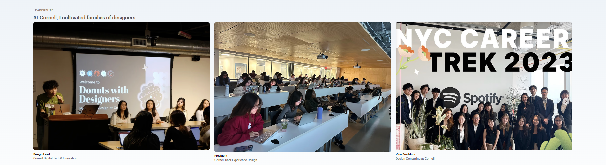
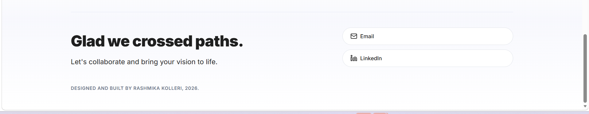

Mentora
Turned scattered academic information into an AI-powered semester planning system.
The Short Version
I designed Mentora to turn static syllabi into actionable academic planning. Students can upload syllabi, see synced classes, track deadlines, forecast grade outcomes, and ask Demi course-specific questions instead of digging through PDFs, calendars, and LMS updates.
Problem
Students are forced to manage academic systems that do not talk to each other. Syllabi live in PDFs, deadlines live in calendars, grade policies live in documents, and updates live in emails or LMS announcements. Students are left manually connecting everything.
Goal
Help students turn scattered academic information into one clear semester plan, with enough structure to reduce manual setup and enough intelligence to answer course-specific questions.
Research artifact
Mapping the semester planning problem

Research & Users
I designed for busy students balancing coursework, work, leadership roles, deadlines, and changing expectations. Mentora needed to be proactive, not just a place to store information.
Hania
A 20-year-old student working part-time while taking 15 credit hours. She needs one place to track deadlines, updates, and academic priorities.
Max
A 20-year-old computer science student balancing coursework and leadership. He procrastinates and forgets to update his calendar, making planning tools feel unreliable.
Key Pain Points
Manual Syllabus Setup
Students spend hours copying assignments, quizzes, exams, and project deadlines into calendars.
Unclear Grade Standing
Students often do not know where they stand or what they need on future exams.
Missed Updates
Important class changes can get buried in email or LMS announcements.
Poor Study Prioritization
Students struggle to decide what matters most when deadlines and grade weights compete.
Product Direction
Drop in a syllabus. Get back a semester plan. Mentora starts with the document students already have, then extracts class information and turns it into synced classes, calendar events, to-do items, grade data, and AI context for Demi.
Core Workflow
01 Extract
Pull course names, assignments, due dates, grading rules, exam dates, class schedules, and policies from uploaded syllabi.
02 Organize
Turn that information into synced classes, calendar events, to-do items, grade data, and upcoming academic tasks.
03 Advise
Use Demi to summarize course information, explain grading policies, answer questions, and suggest next steps.
Solution
The final experience centered on syllabus upload, AI support, academic planning, and grade tools. Students upload PDFs, review synced courses, ask Demi questions, see upcoming tasks, and understand both their current grades and future grade forecasts.
Impact
Less Manual Setup
Students can upload syllabi instead of copying every deadline by hand.
Better Visibility
Calendar events, tasks, and to-dos make deadlines easier to track.
Clearer Grades
Current calculation and final forecasting answer different student questions.
Faster Answers
Demi gives students a lower-friction way to ask questions about their classes.
Reflection
This project pushed me to think beyond screens and design the full product system. The strongest part of Mentora was connecting syllabus upload, class extraction, calendar planning, grade tools, and AI support into one coherent workflow.